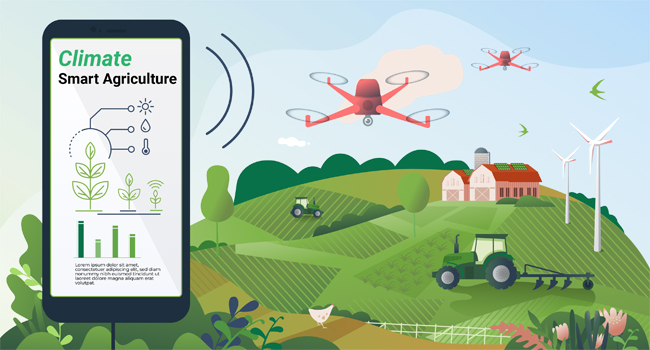
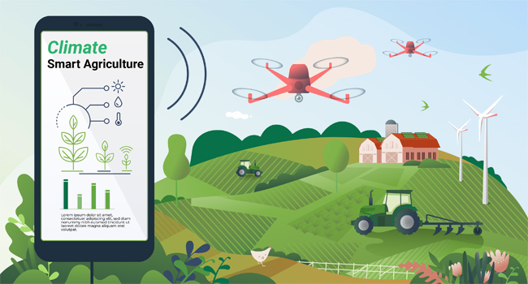

উদাহরণস্বরূপ, যথার্থ সেচ এবং সুনির্দিষ্ট উদ্ভিদ পুষ্টি; গ্রিনহাউসে জলবায়ু ব্যবস্থাপনা এবং নিয়ন্ত্রণ; সেন্সর-মাটি, জল, আলো, আর্দ্রতা, তাপমাত্রা ব্যবস্থাপনার জন্য সফটওয়্যার প্লাটফরম; অবস্থান সিস্টেম- জিপিএস, স্যাটেলাইট, যোগাযোগ ব্যবস্থা- মোবাইল সংযোগ; রোবট; বিশ্লেষণ এবং অপটিমাইজেশান প্লাটফরম, আর এই সমস্ত প্রযুক্তির মধ্যে সংযোগ হলো ইন্টারনেট অব থিংস যা প্রাপ্ত ডেটার ওপর ভিত্তি করে খামার পরিচালনা করে থাকে। এসব ব্যবস্থার জন্য কৃষকরা তাদের খামারের প্রক্রিয়াগুলো নিরীক্ষণ করতে পারে এবং দূর থেকে কৌশলগত সিদ্ধান্ত নিতে পারে। গ্রামীণ পর্যায়ে কৃষককদের সংগঠন ভিত্তিক কৃষির বিভিন্ন ডিজিটাল প্রযুক্তি ও আধুনিক যন্ত্রপাতি ব্যবহার বিষয়ে প্রশিক্ষণ ও প্রচারণার মাধ্যমে আরো দক্ষ করে তোলা দরকার।
আমাদের দেশের প্রেক্ষাপটে স্মার্ট কৃষি বাস্তবায়নে যেসব বিষয় লক্ষ্য রাখা দরকার তা হলো- প্রতি একর জমিতে ফসলের উৎপাদনশীলতা প্রায় দ্বিগুণ করা (যদিও সব ফসলে দ্বিগুন করা সম্ভব না যেমন ধান); উৎপাদন ব্যবস্থাপনা দ্রুততর করা; সরবরাহ ব্যবস্থাকে স্মার্ট ও তরান্বিত করা; লাগসই প্রযুক্তি ও কৃষি যান্ত্রিকীকরণ ব্যবস্থা ও প্রযুক্তির সঠিক ব্যবহার নিশ্চিত করা; চাষাবাদ থেকে শুরু করে বাজারজাতকরণ সবক্ষেত্রে স্মার্ট প্রযুক্তি ব্যবহার যেমন রিমোট কন্ট্রোল, অটোমেশন, অপারেটেড রাইস ট্রান্সপ্লান্টার, কম্বাইন হারভেস্টার ব্যবহার বীজবপণ যন্ত্রের ব্যবহার বাড়ানো, ড্রোন ব্যবহার, স্মার্ট সয়েল ময়েশ্চার সেনসর ব্যবহার, পিএইচ সেনসর, আইওটি ভিত্তিক স্মার্ট কৃষি খামার ব্যবস্থাপনা, রিমোট সেনসিং এবং জিআইএস প্রযুক্তির মাধ্যমে ক্ষতিকর পোকামাকড় ও রোগের পূর্বাভাস প্রদান ও দমন ব্যবস্থাপনা, রোবটিক্স (ক্ষেত্র বিশেষে) ইত্যাদি ব্যবহারে কম খরচে অধিক ফলন বৃদ্ধি নিশ্চিত করা দরকার।
স্মার্ট সেচ ব্যবস্থা বাস্তবায়নে নির্দিষ্ট ল্যান্ডস্কেপ চাহিদা মেটাতে স্বয়ংক্রিয়ভাবে পানি দেওয়ার সময়সূচী এবং সঠিক ও প্রয়োজনীয় পরিমাণ পানি সরবরাহ নিশ্চিত করা, জলবায়ু পরিবর্তনের ফলে তাপমাত্রা বৃদ্ধি, আর্দ্রতা কমে যাওয়া, এবং কৃষি জমিতে ভূগর্ভস্থ পানির যথেচ্ছ ব্যবহারের ফলে পানির স্তর নিচে নেমে যাওয়ার কারণ উদঘাটন ও সম্ভাব্য সমাধান খুঁজে বের করা প্রয়োজন। বোরো ধান চাষে অধিক পরিমাণে সেচের প্রয়োজন হয়। বিকল্প ভেজানো এবং শুকানো প্রযুক্তি ব্যবহার করে বোরো ধানে পানির সঠিক ব্যবহার নিশ্চিত করা; বিভিন্ন সবজি চাষে সঠিকভাবে ড্রিপ সেচ পদ্ধতিটি স্থাপন ও পানি সেচ নিয়ন্ত্রণ করতে পারলে প্রথাগত সেচ পদ্ধতির চেয়ে ৮০% পর্যন্ত পানির সাশ্রয় করা সম্ভব। স্প্রিংকলার সেচ পদ্ধতি, ঘরে বসে ডিজিটাল সেচ যন্ত্র পরিচালনা এবং মালচিং পদ্ধতির মাধ্যমে জমিতে আর্দ্রতা বৃদ্ধি করার জন্য স্মার্ট সেচ ব্যবস্থার অনুসন্ধান ও অনুশীলন জরুরি।
জলবায়ু পরিবর্তনের ফলে দেশের দক্ষিণাঞ্চলে লবণাক্ততা বৃদ্ধি ও উত্তরাঞ্চলে খরার প্রবণতাসহ দেশের নিম্নাঞ্চলে আকস্মিক ও নিয়মিত বন্যার প্রবণতা বৃদ্ধি পাচ্ছে। যার কারণে এসব অঞ্চলে ফসল চাষ করা দিনদিন কঠিন হয়ে পড়ছে। জলবায়ু পরিবর্তন
মোকাবিলায় লবণাক্ত, খরা, জলমগ্ন সহিষ্ণু ধান, গম, পাট, সরিষা বা তেল জাতীয় ফসল, বিভিন্ন সবজির জাত উন্নয়ন করা এবং জাতসমূহ দ্রুত কৃষকের দোরগোড়ায় পৌঁছানো দরকার। এক্ষেত্রে গবেষণা প্রতিষ্ঠানসমূহ ও কৃষি বিভাগ যথেষ্ট ভূমিকা রাখছে ও রাখতে পারে। জলবায়ু পরিবর্তন মোকাবিলায় ফসলের চাষ পদ্ধতির পরিবর্তনও প্রয়োজন, যেমন দক্ষিণাঞ্চল ও বন্যাপ্রবণ এলাকায় সর্জন পদ্ধতি, ভাসমান বেডে সবজি চাষ, টিলা পদ্ধতিতে সবজি চাষ এবং উত্তরাঞ্চলে কৃষি জমিতে মালচিং ব্যবহার, বিকল্প ভেজানো এবং শুকানো (অডউ), ড্রিপ সেচ ব্যবস্থা, পাহাড়ি অঞ্চলে জিরো টিলেজ পদ্ধতি ও ফলগাছে মালচিং পদ্ধতি ব্যাপকভাবে প্রয়োগ করা যেতে পারে। এছাড়া গ্রিন হাউজ এর মধ্যে বিভিন্ন সবজি সারাবছর চাষ করার উদ্যোগ নেওয়া যেতে পারে। তার জন্য গবেষণা প্রতিষ্ঠানসহ উপযুক্ত জায়গায় গ্রিণ হাউস স্থাপনের সুযোগ-সুবিধা বৃদ্ধি করা যেতে পারে।
দেশের জনসংখ্যা দিন দিন বাড়ছে। জমির পরিমাণ কমছে। বর্ধিত এ জনগোষ্ঠীর খাদ্য ও পুষ্টি নিরাপত্তা নিশ্চিত করতে স্বল্প জমির সর্বোত্তম ব্যবহার নিশ্চত করতে হবে। মাননীয় প্রধানমন্ত্রী শেখ হাসিনার নির্দেশণা অনুযায়ী এক ইঞ্চি জমিও ফাঁকা রাখা যাবে না। এক্ষেত্রে প্রতি ইঞ্চি জমির সঠিক ব্যবহার নিশ্চিত করতে আমাদের শস্য নিবিড়তা বাড়াতে হবে অর্থাৎ একই জমিতে এক বছরে যত সংখ্যক বেশি ফসল চাষ করা যায় তা করতে হবে। যেমন আন্তঃফসল, সাথী ফসল ও মাল্টিলেয়ারে ফসল চাষ করা যেতে পারে, এতে জমির সর্বোত্তম ব্যবহার নিশ্চিত হবে এবং মোট উৎপাদনও বৃদ্ধি পাবে। এক্ষেত্রে জমির স্বাস্থ্য ঠিক রাখতে পর্যাপ্ত জৈব সারের ব্যবহার বাড়াতে হবে। তাই জৈব সার উৎপাদনে যথেষ্ট গুরুত্ব দেওয়া দরকার। আবাদযোগ্য জমি, চলতি পতিত জমি, স্থায়ী পতিত জমি ও প্রাতিষ্ঠানিক পতিত জমির আপগ্রেড তথ্য জিআইএস এর মাধ্যমে সংগ্রহ করে ডাটবেস তৈরি করে স্বল্প মেয়াদী, মধ্যমেয়াদী ও দীর্ঘমেয়াদী পরিকল্পনা প্রণয়ন করে তা ক্রমান্বয়ে বাস্তবায়ন করতে পারলে সুফল মিলবে বেশি। সরকারের নানামূখী পদক্ষেপের কারনে বিভিন্ন সরকারি-বেসরকারি প্রতিষ্ঠান এসব কার্যক্রম গ্রহন করতে দেখা গেছে, যা আশাব্যাঞ্জক।
স্মার্ট বাজার ব্যবস্থাপনা স্মার্ট কৃষিরই একটি অবিচ্ছেদ্য অঙ্গ। একটি ছাড়া অন্যটি অচল। স্মার্ট ফার্মিংয়ে তথ্যের দক্ষ ও ন্যায়সংগত প্রবাহকে সক্ষম করে তোলার জন্য সরবরাহ শৃঙ্খলের সব অ্যাক্টরের মধ্যে একটি গুরুত্বপূর্ণ সংযোগ তৈরি করে দেওয়া দরকার। তাতে অ্যাক্টরদের ক্ষমতার ভারসাম্য বজায় থাকে। পুরো সরবরাহ-শৃঙ্খল জুড়ে লাভকে আরও সুষমভাবে পুনর্বণ্টন করার সুযোগ করে দিয়ে একটি উইন-উইন পরিবেশ বজায় থাকবে। সাপ্লাই চেইন (যেমন প্রসেসর এবং ভোক্তাদের), তারা তাদের গ্রাহকদের চাহিদা মেটাতে তাদের উৎপাদন ব্যবস্থা পরিবর্তন করতে পারে। গ্রাহকদের ক্রমবর্ধমান চাহিদা পূরণ করা কৃষিব্যবসায়ের জন্য অত্যন্ত গুরুত্বপূর্ণ, যা ভবিষ্যতে টেকসই ক্ষমতা পাবে এবং স্মার্ট ফার্মিং এটির অনুঘটক হিসেবে কাজ করবে। সুষ্ঠু ও দক্ষ বাজার ব্যবস্থাপনা থাকলে কৃষক ন্যায্য মূল্য পাবে। তারা ফসল চাষাবাদে অধিক আগ্রহী হবে।
কৃষির বাণিজ্যিক উৎপাদন এলাকায় কোল্ড চ্যাম্বার বা সবজি সংরক্ষণাগার বা মাল্টি-পারপাস সংরক্ষণাগার স্থাপন করা গেলে সবজির অপচয় কমবে এবং কৃষক লাভবান হবে। সেসব এলাকায় পর্যাপ্ত হিমাগার থাকলে ও কৃষিপণ্য প্রক্রিয়াজাত শিল্প-কারখানা গড়ে উঠলে এবং বৈদেশিক বাজার তৈরি করা গেলে কৃষক পণ্য বিক্রয় করে কৃষক অধিক লাভবান হবে। তাই দেশীয় বাজার ব্যবস্থাপনার পাশাপাশি আমাদের কৃষিপণ্য বিদেশে রপ্তানি করার আরো উদ্যোগ গ্রহন করা দরকার। কৃষি প্রক্রিয়াজাতকারী প্রতিষ্ঠান গড়ে তুলতে বিদেশি বিনিয়োগকারীদের আকৃষ্ট করতে হবে। তার জন্য অনুকূল পরিবেশ তৈরি করা যেমন দরকার তেমনি বিনিয়োগকারীদের আকর্ষণীয় সব সুযোগ-সুবিধা দেওয়ার প্রতিশ্রুতিও দরকার। বর্তমানে বাংলাদেশ সরকার বিনিয়োগকারীদের আকৃষ্ট করার জন্য বহুমুখী পদক্ষেপ গ্রহণ করেছে।
ক্রমবর্ধমান জনসংখ্যা ও ক্রমহ্রাসমান জমির সমস্যা থেকে উত্তরণ পেতে স্মার্ট ভার্টিকেল গ্রিকালচার ফার্মিং, স্মার্ট রুপটপ ফার্মিং, পারিবারিক পুষ্টি বাগান ব্যাপকভাবে চালু করা যেতে পারে। যদিও সরকারের এসব বিষয় বহুমুখী প্রকল্প চলমান রয়েছে। তার সঠিক বাস্তবায়নও হচ্ছে। সহজ কথায় দেশের স্বল্প সম্পদকে বা জমিকে যতখানি স্মার্টলি ব্যবহার করা যাবে ততই কৃষি স্মার্ট হয়ে উঠবে। বর্তমানে দেশ হতে আম, কাঁঠাল, আলু, বিভিন্ন সবজি, হিমায়িত চিংড়ি ইত্যাদি পৃথিবীর বিভিন্ন দেশে রপ্তানি হচ্ছে। আমাদের স্মার্ট ওয়েব ও মোবাইল এপস উদ্ভাবন এবং অন্যান্য আধুনিক সুযোগ-সুবিধা সৃষ্টির মাধ্যমে সাপ্লাই চেইন সংক্ষিপ্তকরণ, কৃষক এবং ভোক্তার ক্রয়/বিক্রয় ন্যায্যমূল্য নিশ্চিতকরণ এবং স্মার্ট কৃষি বিপণন ব্যবস্থা গড়ে তুলতে পারলে স্মার্ট কৃষি বাস্তবায়ন সহজ হবে। এসডিজি-২০৩০ কে সামনে নিয়ে ডেল্টা প্ল্যান-২১০০ এ উল্লিখিত কৃষির ছয়টি হটস্পট (হটস্পটগুলো হচ্ছে: উপকূলীয় অঞ্চল, বরেন্দ্র ও খরাপ্রবণ অঞ্চল, হাওর ও আকস্মিক বন্যাপ্রবণ অঞ্চল, পার্বত্য চট্টগ্রাম অঞ্চল, নদী ও মোহনা অঞ্চল এবং নগরাঞ্চল) চ্যালেঞ্জসমূহ মোকাবিলায় যেসব স্মার্ট পরিকল্পনা বা কর্মকৌশলসমূহ রয়েছে তা স্মার্টলি বাস্তবায়ন করতে পারলে স্মার্ট কৃষি পূর্ণতা পাবে। সে সাথে অর্থনীতিও স্মার্ট হয়ে উঠবে আর ২০৪১ সালের মধ্যে স্মার্ট বাংলাদেশ গড়ে তুলতে সহায়ক হবে।
 
